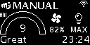
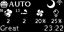
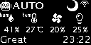
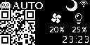
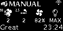
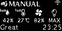

UI map
Mode selection (AUTO, MANUAL, OFF)
Note
⇓ long press
to switch purifier into next mode
Available modes list
| Step | Display frame | Mode descritption | Encoder action |
|---|---|---|---|
| 1 |  |
Fans are off RGBs are off |
⇓ long press |
| 2 |  |
Fans speed is controlled automatically RGBs represent AQI level |
⇓ long press |
| 3 |  | Fans speed is set manually RGBs represent AQI level |
⇓ long press |
| 4 | go to step 1 |
AUTO & MANUAL mode: selecting sensor data
Note
↺ rotate
to cycle through available sensors data
AUTO mode: available sensors list
| Step | Display frame | Visible sensor / settings | Encoder action |
|---|---|---|---|
| 1 | |
AQI(=9), AQI Category(=Great) fan speed(=20%) RGB brightness(=25%) |
↺ rotate |
| 2 |  | PM10(=2µg/m³), PM2.5(=2µg/m³) AQI Category(=Great) fan speed(=20%) RGB brightness(=25%) |
↺ rotate |
| 3 |  |
VOC(=53), NOX(=1) AQI Category(=Great) fan speed(=20%) RGB brightness(=25%) |
↺ rotate |
| 4 |  | temperature(=27'C), humidity(=41%) AQI Category(=Great) fan speed(=20%) RGB brightness(=25%) |
↺ rotate |
| 5 |  | IP address of the webserver fan speed(=20%) RGB brightness(=25%) |
↺ rotate |
| 6 | go to step 1 |
Additionally to the sensor value, display always shows current fans speed and RGBs brightness. In AUTO mode:
- fans speed is controlled by purifier and depend on the pollution level, and time of day (e.g. lower max fans speed at night)
- RGBs brightness is controlled by purifier, and depends on time of day (e.g. lower brightness at night)
MANUAL mode: available sensors list
| Step | Display frame | Visible sensor / settings | Encoder action |
|---|---|---|---|
| 1 | AQI(=9), AQI Category(=Great) AQI Category(=Great) fan speed(=82%) RGB brightness(=100%) |
↺ rotate | |
| 2 |  | PM10(=2µg/m³), PM2.5(=2µg/m³) AQI Category(=Great) fan speed(=82%) RGB brightness(=100%) |
↺ rotate |
| 3 |  |
VOC(=89), NOX(=1) AQI Category(=Great) fan speed(=82%) RGB brightness(=100%) |
↺ rotate |
| 4 |  | temperature(=27'C), humidity(=42%) AQI Category(=Great) fan speed(=82%) RGB brightness(=100%) |
↺ rotate |
| 5 | IP address of the webserver fan speed(=82%) RGB brightness(=100%) |
↺ rotate | |
| 6 | go to step 1 |
Additionally to the sensor value, display always shows current fans speed and RGBs brightness. In MANUAL mode these values were selected by user and will not change on it's own.
MANUAL mode: setting fan speed
Note
↓ short press
↺ rotate
to change fan speed
Confirming
After setting fans speed to desired value you can wait for some time or
↓ short press
↓ short press
to save fans speed immediately
MANUAL mode: setting RGBs brightness
Note
↓ short press
↓ short press
↺ rotate
to change RGBS brightness
Confirming
After setting RGBs brightness to desired value you can wait for some time or
↓ short press
to save fans speed immediately